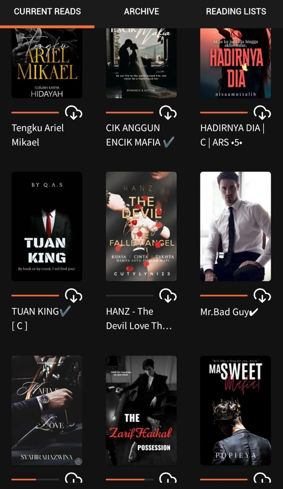

🎨 My Hobbies 🎨
Things That Make Me Happy 💕
Welcome to my hobby corner! This is where I share all the fun things I love to do in my free time. These hobbies bring me joy, help me relax, and allow me to express my creativity. Let me take you on a tour of what keeps me inspired!
✨ Why Hobbies Matter
Hobbies are so important for mental health and happiness! They give me something to look forward to, help me de-stress, and allow me to explore different sides of my personality. I believe everyone should have hobbies that make their heart happy!
🎀 My Creative Outlets
One of my favorite hobbies is listening to music, reading story and watching movies or anime, they never get boring. Music always matches my mood, whether I want to relax or get energized. Watching movies, anime and readingg ebook helps me unwind and forget the stress of the day. But overall, these simple things make my free time fun and relaxin
📚 Reading Ebook
 Most of the books I read are actually e-books, especially Wattpad stories and manga, which are Japanese comics. I enjoy a wide range of genres, but romance and fantasy are definitely my top favourites because they let me escape into different worlds. Even though I don’t really read physical books, those usually make me sleepy 😆 e-books always keep me hooked. Reading this way feels fun, light, and perfect for my style.🚶Brisk Walk
Another hobby I really enjoy is taking brisk walks in the evening around UiTM. It’s a simple activity, but it helps me relax and refresh my mind after a busy day. Walking around the campus while enjoying the evening breeze and peaceful vibes always makes me feel calmer and more energized. It’s also my little time to enjoy the scenery and just appreciate the moment.
🎵 Music
Another hobby I really enjoy is listening to K-pop music, especially songs from my favourite band, DAY6. Their music always comforts me with meaningful lyrics and beautiful melodies. Whether I’m studying, relaxing, or just taking a break, DAY6’s songs make me feel understood and motivated. Their music gives me strength, brightens my mood, and always helps me get through the day.
🎮 Gaming
Another hobby I really enjoy is playing Roblox during my free time, especially when I get to team up with my friends. It’s such a fun and relaxing way to unwind after a long day. Whether we’re exploring new worlds, building crazy things, or completing challenges together, there’s always something exciting to do. Playing with friends makes the experience even better because we get to laugh, be silly, and just enjoy the moment without stress. It’s my little escape where I can have fun, be creative, and spend quality time with the people I care about.